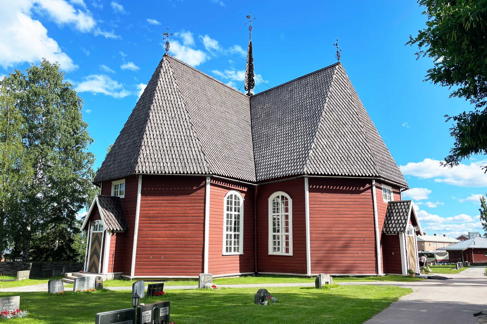
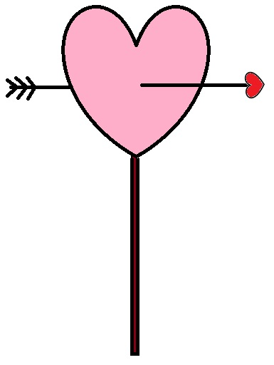

Olemma ilosia saaessamme kuttua teät mukhaan juhlihmaan meän päivää. Tältä sivulta löyät kaikki häihin liittyvät tärkät tiot – hääpaikasta, saapumisesta ja majottumisesta aina ilmoittautumisheen ja muistamishiin.
Aika ja Paikka
25 heinäkuuta 2026
Vihkiminen: Mataringin Kirkko klo: 15:00 (Suomen aikaa)
Hääjuhla: Lapland View Lodge
Mataringin kirkko
Matarengin kirkko (ruots. Övertorneå kyrka) on kirkkorakennus Ylitornion kunnassa Norrbottenin läänissä Ruotsissa. Kunnan keskustaajamassa oleva Övertorneån seurakunnan pääkirkko on rakennettu vuosina 1735–1737. Erillinen kellotapuli on valmistunut vuonna 1763. Kirkko on Pohjois-Ruotsin parhaiten säilyneitä 1700-luvun kirkkoja ja siellä on Ruotsin vanhimmat edelleen käytössä olevat urut. - Wikipedia -
Lapland View Lodge

Lapland View Lodge sijaitsee Luppio-vuorella Övertorneån vieressä. Luonnon kanssa harmoniassa rakennettu maisemahotelli oli valmis vastaanottamaan vieraita joulukuussa 2021 ja on nyt avoinna ympäri vuoden. Kahdessa päärakennuksessa, joiden yhteydessä on terassi, sijaitsevat vastaanotto, ravintola, baari ja viihtyisä takkahuone. Ravintolassamme nautitte paikallisesta ruoasta ja tarjoilemme aterioita, jotka on valmistettu Lapin paikallisista raaka-aineista. Rakennuksissa ja kylpyläalueella sekä 40 hotellimökissä on suuret ikkunat, joista voit nauttia henkeäsalpaavista näkymistä Tornionjoen laakson ja laajan ympäristön yli – Lapland View Lodge -
Miten pääsen paikalle?
Mataringin kirkon löydät osoitteesta Matarengivägen 31, 957 31 Övertorneå, Sweden
Lapland View Lodgen osoitteesta: Luppio 202, 957 91 Övertorneå, Sweden.
Voit myös seurata alla olevan mukaisia tienviittoja ylitettyäsi Aavasaksan sillan Ruotsin puolelle.
Majoittuminen
Juhlapaikan läheisyydessä on useita majoitusvaihtoehtoja, tässä hääparin suositukset.
Lapland View Lodge
Lapland View Lodge toimii häiden juhlapaikkana ja hääpari yöpyy täällä.
Lapland View Lodge tarjoaa tasokasta majoitusta suurin lasi-ikkunoin varustetuissa mökeissä. Lisähinnasta käytössä Spa-alue ja sauna upeilla näkymillä.
Jos päätät majoittua täällä, allaolevat hinnat ovat voimassa kun käytät varatessasi koodia MEÄNHÄÄT
Standard Cabin (maks 2 hlö): ??? SEK/yö
Premium Cabin (maks 2 hlö): ??? SEK/yö
Family Cabin (maks 4 hlö): ??? SEK/yö
Family Premium Cabin (maks 4 hlö): ??? SEK/yö
Lisätietoja varten, klikkaa tästä ja tutustu tarkemmin.
Matarengi Lodge
Matarengi Lodge tarjoaa tasokasta hotellimajoitusta Matarengin keskustassa n. 10km juhlapaikasta. Hotellissa on Spa-alue ja sauna. Tänne pääset juhlpaikalta kätevästi esimerkiksi taksilla.
Jos päätät majoittua täällä, allaolevat hinnat ovat voimassa kun käytät varatessasi koodia MEÄNHÄÄT
Double Room (maks 2 hlö): ??? SEK/yö
Double Room with balcony (maks 2 hlö): ??? SEK/yö
Family Room (maks 4 hlö): ??? SEK/yö
Lisätietoja varten, klikkaa tästä ja tutustu tarkemmin.
Ilmoittautuminen
Muistamiset
Ei lahjoja, vaan RAHAA!!!